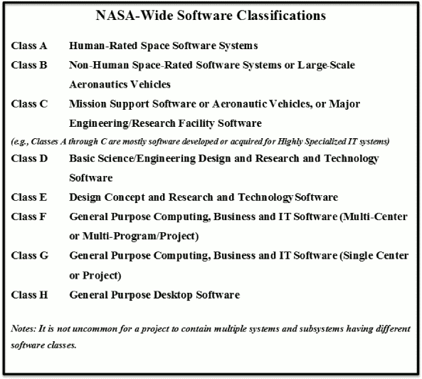

Weekly musing #2 - happy Easter!
{kind=link}
I've been busy painting easter eggs this week. Happy hunting!
Thoughts on verification and validation in Bitcoin projects
To recap the difference between verification and validation:
- Verification:
- Does the software work right (according to the specified requirements)?
- Validation:
- Does it do the right thing (are the requirements correct, consistent, complete, ...)?
Thinking globally
If Bitcoin manages to grow out of its current stagnation - and I remain optimistic - then it could become a component of human civilization that is just as important as the Internet, or whatever will replace our global communications medium in 20-100 years. We want to be able to trust this Bitcoin software with our money, which can be life and death matter.
Imagine you need to pay for medical treatment for yourself or a loved one using Bitcoin. What if the system has a bug and now your funds have been transferred to another recipient than intended?
It is very important that we ensure the best possible engineering practices in our work on this new technology. In our automated world, software errors are becoming increasingly costly. The "high-end" ones listed there are in the region of up to $500M . I offer a humble prediction:
The most costly software mistakes of the near future will belong to cryptocurrency projects.
Hopefully not Bitcoin though 
At this time, Bitcoin market cap stands at around $19B . A serious bug could easily halve this, leading to severe losses for many individual users. Nobody wants to be the responsible developer, reviewer, tester or project leader who let a major bug slip through the cracks. Fortunately, as I look around today, there are plenty of source projects which work in exemplary ways from which we can draw inspiration for Bitcoin and avoid pitfalls. So let's look outside of our cryptocurrency box for a moment.
Virtuous example 1: Linux kernel project
Around April 2003 (as far as I can tell), Craig Thomas of Open Source Development Lab released a paper, which I would encourage you to have a look at (or read again) if you have some free time on this long weekend:
"Improving Verification, Validation, and Test of the Linux Kernel: the Linux Stabilization Project" [2].
At the time, the Linux kernel was moving towards version 2.6, experiencing great uptake, with lots of contributors growing the size of the project. Reading just the first four sections of the paper, the similarities to the state of the Bitcoin "project" (in a bigger sense) are quite evident. How does this sound:
"Since there are no formal specifications for many of the features of the
kernelprotocol" (replacement mine)

Or this:
"While many people contribute features and patches to the
kernelprotocol, very few people actually take a disciplined approach to testing it."
Sound familiar?
Looking back now, we can say that the Linux project did a good job at solving its problems:
- lack of specification: addressed through the Linux Standards Base
- lack of test coverage: addressed through the Linux Test Project
We would do well to emulate Linux in setting up similar projects for Bitcoin, which could span various client implementations while focusing on a set of 'base' protocol features. After all, our various client projects (Core, Knots, XT, Classic, Bitcoin Unlimited, etc.) are similar to Linux distributions based loosely off a common "kernel" of features.
It is my hope that someday, we will have a "Bitcoin Standards Base" and a "Bitcoin Test Project" to cover multiple needs in the industry and advise people, whether they be users wanting to assist or projects/businesses wanting to use the technology or develop it further.
Virtuous example 2: Wikimedia organization
Another good example of a project to emulate in terms of openness is Wikimedia.org.
They have their entire code review and integration test pipeline publicly visible, including for the MediaWiki framework, the software that powers Wikipedia. Some examples of the verification related data they publish:
- Wikimedia CI dashboard: https://grafana.wikimedia.org/dashboard/db/continuous-integration?orgId=1
- Jenkins CI server: https://integration.wikimedia.org/ci/
- Code review (using Gerrit): https://gerrit.wikimedia.org/r/#/q/status:open
- Code test coverage: https://doc.wikimedia.org/cover/
- Test cluster health stats: https://tools.wmflabs.org/nagf/?project=integration
Having this information publicly available greatly helps those who want to get involved, whether as developers or testers.
This is all built on free or open source software, so it feeds an ecosystem that can grow into the future, unconstrained by small-scale profit motives.
For a Bitcoin client, I would presume it would be natural that not only the software is open source, but also all the data and research related to it - i.e. input and results of tests, simulations etc. Open source, open data (the blockchain is a perfect example), open standards [3], open access. Did I miss anything? Maybe "open infrastructure/integration" - ensuring that the project infrastructure allows individuals and other organization to easily "plug in" through a variety of software interfaces, to feed in data and extract it.
Virtuous example 3: NASA (you said you want to go the moon!)
In my software career, I have come across extremely helpful bits within the mountains of information that NASA publishes. A good point to start would be https://code.nasa.gov/ !
If we ignore the "Projects" for now, and navigate to the "Guide" section, we find some interesting further links:
Software release at NASA is governed by NPR 2210.1C. NPR 2210.1C establishes the roles, responsibilities, and procedures for reporting, reviewing, and releasing software under various conditions, including open source.
The link which I've embedded goes to NODIS, the NASA Online Directives Information System - a search engine for information on agency directives. This looks dry, but contains a ton of useful information, if one digs a little. For example, the previous "Guide" page also mentions:
NASA has established formal software engineering requirements in NPR 7150.2A. These requirements govern all software development activities and must be followed throughout a project's development life cycle.
We can use NODIS to locate this "NPR 7150.2A". Actually, it tells us that it has been replaced by an updated revision, NPR 7150.2B:
https://nodis3.gsfc.nasa.gov/displayDir.cfm?Internal_ID=N_PR_7150_002B_
In the preface, this contains an interesting picture to give an overview of the kinds of software that NASA needs to manage.
|  |
{kind=link}
Let's say you had to pay for your moon rocket in bitcoins. Where would you put Bitcoin software, in that classification?
The parts of NPR7150.2B that will be of more interest as potential inspiration to those concerned with serious software development are the "meat chapters" 3-6:
- Chapter 3: Software Management Requirements
- Chapter 4: Software Engineering Life-Cycle Requirements
- Chapter 5. Supporting Software Life-Cycle Requirements
- Chapter 6. Recommended Software Documentation Contents
Chapter 3, while apparently about "management" (rolls eyes), has valuable guidance in there. Don't be put off. Especially section 3.7, "Safety-critical software" - this is not just applicable to space station software! Let's take some tidbits of advice!
a. Safety-critical software is initialized, at first start and at restarts, to a known safe state.
d. Operator overrides of safety-critical software functions require at least two independent actions by an operator.
g. Safety-critical software performs integrity checks on inputs and outputs to/from the software system.
k. Software provides error handling of safety-critical functions.
Ch. 4 contains this piece of wisdom:
4.1.1 The requirements phase is one of the most important phases of software engineering. Studies show that the top problems in the software industry are due to poor requirements elicitation, inadequate requirements specification, and inadequate management of changes to requirements. Requirements provide the foundation for the entire life-cycle, as well as for the software product.
And it goes on to say about testing (for "project manager" you can also read "lead maintainer", "The Developer", "CTO" or just "you" as a software developer in a Bitcoin context):
4.5.3 The project manager shall perform software testing. [SWE-066]
Note: A best practice for Class A, B, and C software projects is to have formal software testing planned, conducted, witnessed, and approved by an independent organization outside of the development team. Testing could include software integration testing, systems integration testing, validation testing, end-to-end testing, acceptance testing, white and black box testing, decision and path analysis, statistical testing, stress testing, performance testing, regression testing, qualification testing, simulation, and others. The use of automated software testing tools is also to be considered in software testing. Test breadth and accuracy can be increased through the use of test personnel independent of the software design and implementation teams, software peer reviews and inspections of software test procedures and software test results, and employing impartial test witnesses.
Fortunately, if you keep your code, tests and records publicly accessible, you are well on your way to independent review! (However, occasionally it pays to call in experts to assist, if you are involved in Bitcoin in some professional endeavour.)
Having more diversity of implementations around the common protocol also helps keep everyone's work in check.
Acting locally - what can we do to strengthen our projects (e.g. Bitcoin Unlimited)
First, we can (re-)acquaint ourselves with IEEE Std 830-1998 (IEEE Recommended Practice for Software Requirements Specifications) which gives extremely solid guidance on how to construct good software requirements specs. Of course, applying it is needed, but reading is definitely a first step.
Technical proposals are currently often too informal. This applies to technical BUIPs as well, which still lag behind BIPs or proposal like "ToTheMoon"'s Extension Blocks a little in terms of rigor.
Next up, we need to follow better practices in constructing the software, verifying and validating properly. Get the project's test results (records) to be archived in a decentralized way (i.e. in a separate software repository), instead of in ephemeral comment threads on Github. Of course, testers should sign off on test evidence in some way. Signed commits in a Git repository would do the trick.
Regression test suites are lacking coverage and need to be extended. It not surprising when requirements are lacking - developers tend to interpret everything according to their own whims in that case.
Regression tests should be run automatically and regularly, to catch any bugs that may creep in with future changes.
Bitcoin projects attract a wide spectrum of practitioners, with different levels of experience etc.
Even experienced software developers can struggle for quite some time with the complexities of the current (somewhat legacy) codebase.
During this time, they are apt to make more mistakes.
Good test coverage is the safety net that's nearly always there
Currently, BU uses Travis for continuous integration testing on pull requests and merge commits. I raised BUIP052 specifically to add more test coverage using daily/nightly runs of the full test suite (which is currently only partially exercised by Travis). Nowadays there are a lot of options when it comes to CI services, and they are affordable to even small projects (many offer free time to free software projects). Other contributors have pointed out additional ways of approaching the problem, such as build farms with hardware run by project contributors.
A good exercise for a Bitcoin project is to draw up a proper V&V plan describing how it's handled, the infrastructure, what records are produced, etc. I haven't seen such a document in any of the Satoshi client projects so far.
If there is anything more frustrating for a developer than not knowing what the overall test status is of the code they are working on, then it is having to wait for a long time for tests to finish. I submitted a little tool to BU and Classic, which can execute Bitcoin's C++ unit tests in parallel on a multi-core machine.
https://github.com/BitcoinUnlimited/BitcoinUnlimited/pull/452
On my workstation this cuts down the time from 199s to 59s, for a full run of all unit tests. Practically, it is of course limited by the longest test. Still, it helps a bit.
Wishing all of you a peaceful Easter weekend!
Footnotes
[1] https://en.wikipedia.org/wiki/Pysanka
Easter egg graphic derived from original art by
http://artalbum.org.ua/ru/site/license - http://artalbum.org.ua/, Public Domain, https://commons.wikimedia.org/w/index.php?curid=38482200>